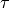

Table of Contents
The Indirect Data Analysis interface is a collection of tools within MantidPlot for analysing reduced data from indirect geometry spectrometers, such as IRIS and OSIRIS.
The majority of the functions used within this interface can be used with both
reduced files (_red.nxs) and workspaces (_red) created using the Indirect Data
Reduction interface or using  files (_sqw.nxs) and
workspaces (_sqw) created using either the Indirect Data Reduction interface or
taken from a bespoke algorithm or auto reduction.
files (_sqw.nxs) and
workspaces (_sqw) created using either the Indirect Data Reduction interface or
taken from a bespoke algorithm or auto reduction.
There is the option to perform Bayesian data analysis on the I(Q, t) Fit ConvFit tabs on this interface by using the FABADA fitting minimizer, however in order to to use this you will need to use better starting parameters than the defaults provided by the interface.
You may also experience issues where the starting parameters may give a reliable fit on one spectra but not others, in this case the best option is to reduce the number of spectra that are fitted in one operation.
In both I(Q, t) Fit and ConvFit the following options are available when fitting using FABADA:

Provides an interface for the ElasticWindow algorithm, with the option of selecting the range to integrate over as well as the background range. An on-screen plot is also provided.
For workspaces that have a sample log or have a sample log file available in the Mantid data search paths that contains the sample environment information the ELF workspace can also be normalised to the lowest temperature run in the range of input files.
.
Given either a saved NeXus file or workspace generated using the ElWin tab, this
tab fits  vs.
vs.  with a straight line for each
run specified to give the Mean Square Displacement (MSD). It then plots the MSD
as function of run number.
with a straight line for each
run specified to give the Mean Square Displacement (MSD). It then plots the MSD
as function of run number.
MSDFit searches for the log files named <runnumber>_sample.txt in your chosen raw file directory (the name ‘sample’ is for OSIRIS). If they exist the temperature is read and the MSD is plotted versus temperature; if they do not exist the MSD is plotted versus run number (last 3 digits).
The fitted parameters for all runs are in _msd_Table and the <u2> in _msd. To
run the Sequential fit a workspace named <inst><first-run>_to_<last-run>_lnI is
created of  v. for all runs. A contour or 3D plot of
this may be of interest.
v. for all runs. A contour or 3D plot of
this may be of interest.
A sequential fit is run by clicking the Run button at the bottom of the tab, a single fit can be done using the Fit Single Spectrum button underneath the preview plot.
 axis of
axis of
 . range to perform fitting over.
. range to perform fitting over.
Given sample and resolution inputs, carries out a fit as per the theory detailed in the TransformToIqt algorithm.
 file (_sqw.nxs) or workspace (_sqw). file (_sqw.nxs) or workspace (_sqw).
file (_sqw.nxs) or workspace (_sqw). file (_sqw.nxs) or workspace (_sqw).As a bin width that is a factor of the binning range is required for this analysis the bin width is calculated automatically based on the binning range and the number of desired bins in the output which is in turn calculated by reducing the number of sample bins by a given factor.
The calculated binning parameters are displayed alongside the binning options:
I(Q, t) Fit provides a simplified interface for controlling various fitting functions (see the Fit algorithm for more info). The functions are also available via the fit wizard.
Additionally, in the bottom-right of the interface there are options for doing a sequential fit. This is where the program loops through each spectrum in the input workspace, using the fitted values from the previous spectrum as input values for fitting the next. This is done by means of the PlotPeakByLogValue algorithm.
A sequential fit is run by clicking the Run button at the bottom of the tab, a single fit can be done using the Fit Single Spectrum button underneath the preview plot.
over which the fitting will be applied (blue lines on
preview plot).
Similarly to FuryFit, ConvFit provides a simplified interface for controlling various fitting functions (see the Fit algorithm for more info). The functions are also available via the fit wizard.
Additionally, in the bottom-right of the interface there are options for doing a sequential fit. This is where the program loops through each spectrum in the input workspace, using the fitted values from the previous spectrum as input values for fitting the next. This is done by means of the PlotPeakByLogValue algorithm.
A sequential fit is run by clicking the Run button at the bottom of the tab, a single fit can be done using the Fit Single Spectrum button underneath the preview plot.
The model used to perform fitting is described in the following tree, note that everything under the Model section is optional and determined by the Fit Type and Use Delta Function options in the interface.
The Temperature Correction is a UserFunction with the
formula  where
where
 is the temperature in Kelvin.
is the temperature in Kelvin.
file (_sqw.nxs) or workspace (_sqw). file (_sqw.nxs) or workspace (_sqw). over which the fitting will be applied (blue lines on
preview plot).The measured data  is proportional to the convolution of the
scattering law with the resolution function
is proportional to the convolution of the
scattering law with the resolution function  of the spectrometer via
of the spectrometer via  . The traditional method of analysis has been to fit the measured
with an appropriate set of functions related to the form of
predicted by theory.
. The traditional method of analysis has been to fit the measured
with an appropriate set of functions related to the form of
predicted by theory.
and the  have the form of a Lorentzian - a
situation which is almost correct for reactor based backscattering
spectrometers such as IN10 & IN16 at ILL. The convolution of two Lorentzians
is itself a Lorentzian so that the spectrum of the measured and resolution
data can both just be fitted with Lorentzians. The broadening of the sample
spectrum is then just the difference of the two widths. and have a simple functional form and the convolution is also a function
containing the parameters of the and R(Q, omega) functions.
The convoluted function may then be fitted to the data to provide the
parameters. An example would be the case where the is a
Lorentzian and the is a Gaussian. does not have a simple function
form so that the measured data has to be convoluted numerically with the
function to provide an estimate of the sample scattering.
The result is least-squares fitted to the measured data to provide values for
the parameters in the function.
have the form of a Lorentzian - a
situation which is almost correct for reactor based backscattering
spectrometers such as IN10 & IN16 at ILL. The convolution of two Lorentzians
is itself a Lorentzian so that the spectrum of the measured and resolution
data can both just be fitted with Lorentzians. The broadening of the sample
spectrum is then just the difference of the two widths. and have a simple functional form and the convolution is also a function
containing the parameters of the and R(Q, omega) functions.
The convoluted function may then be fitted to the data to provide the
parameters. An example would be the case where the is a
Lorentzian and the is a Gaussian. does not have a simple function
form so that the measured data has to be convoluted numerically with the
function to provide an estimate of the sample scattering.
The result is least-squares fitted to the measured data to provide values for
the parameters in the function.This latter form of peak fitting is provided by SWIFT. It employs a least-squares algorithm which requires the derivatives of the fitting function with respect to its parameters in order to be faster and more efficient than those algorithms which calculate the derivatives numerically. To do this the assumption is made that the derivative of a convolution is equal to the convolution of the derivative-as the derivative and the convolution are performed over different variables (function parameters and energy transfer respectively) this should be correct. A flat background is subtracted from the resolution data before the convolution is performed.
Four types of sample function are available for :
 in the form of
in the form of  where
where  can
be 2, 3 or 4. The Full Width Half-Maximum (FWHM) then has a Q-dependence
(power law) of the form
can
be 2, 3 or 4. The Full Width Half-Maximum (FWHM) then has a Q-dependence
(power law) of the form  . The has been numerically
Fourier transformed into and the
have been fitted with functions of the form of a modified Lorentzian. These
latter functions are used in the energy fitting procedures.
. The has been numerically
Fourier transformed into and the
have been fitted with functions of the form of a modified Lorentzian. These
latter functions are used in the energy fitting procedures.References:

One of the models used to interpret diffusion is that of jump diffusion in which it is assumed that an atom remains at a given site for a time ; and then moves rapidly, that is, in a time negligible compared to ; hence ‘jump’.
Categories: Interfaces | Indirect
{kind=link}
{kind=link}